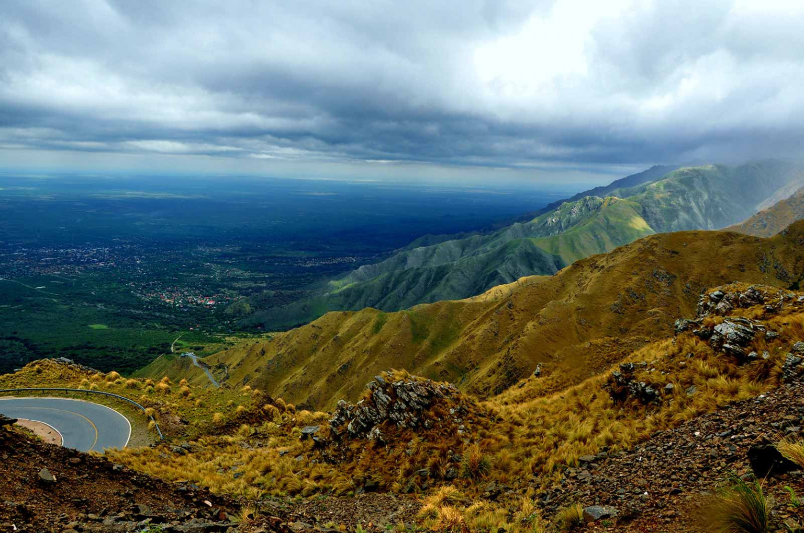
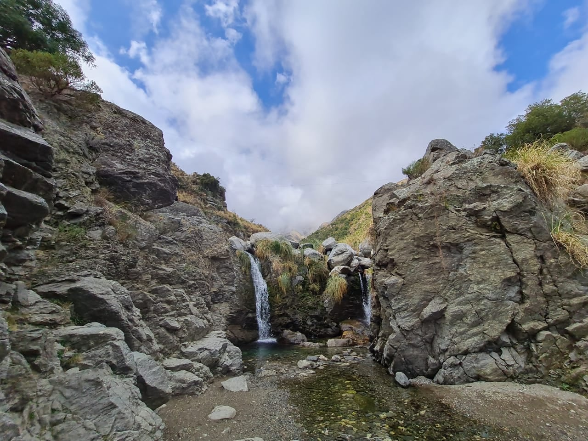
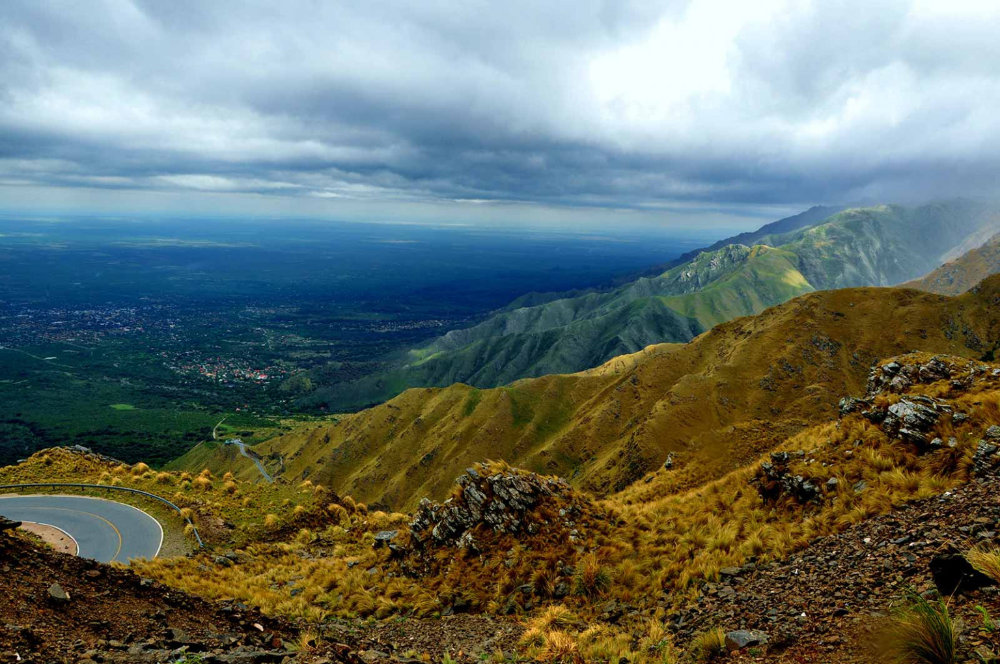
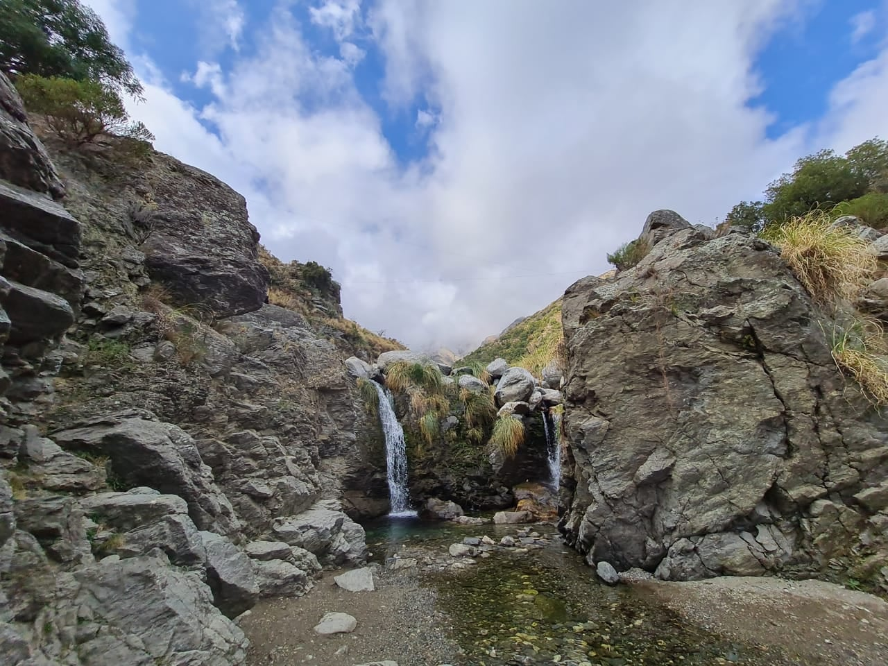

¿Quiénes Somos?
En Serrana Trips somos un equipo apasionado por compartir la magia de San Luis desde adentro. Diseñamos experiencias únicas que combinan naturaleza, aventura y cultura local, para que cada viajero sienta el verdadero espíritu serrano. Nos inspira el amor por nuestras sierras, por los paisajes que cambian con la luz del día y por las historias que se esconden en cada sendero. Ofrecemos tours locales y regionales pensados para todo tipo de viajeros: desde quienes buscan desconectarse entre montañas, hasta los que quieren descubrir cada rincón acompañados por un guía local. Creemos en un turismo consciente, cercano y sustentable, que valore nuestras raíces y deje una huella positiva tanto en quienes viajan como en las comunidades que los reciben.
Nuestro Equipo

Natalia
Especialista en Turismo Serrano
Con más de 8 años de experiencia en turismo local, Natalia conoce cada rincón de San Luis como la palma de su mano. Su pasión por las sierras y su trato cálido hacen que cada viaje sea una experiencia única e inolvidable.

Karina
Coordinadora de Experiencias
Karina diseña itinerarios personalizados que combinan aventura, cultura y relax. Su atención al detalle y su conocimiento profundo de la provincia garantizan que cada viajero descubra lo mejor de San Luis.
Viajá con Comodidad y Confianza: Transfers y Colectivos Propios
En Serrana Trips, tu viaje comienza con la tranquilidad de saber que estás en manos seguras.
Flota Propia
Contamos con transfers y colectivos propios de última generación, asegurando la máxima comodidad, seguridad y puntualidad en todos tus recorridos locales y regionales. Olvídate de intermediarios; nosotros te llevamos a destino con la confianza de un servicio directo, responsable y siempre disponible.
Nuestra moderna flota está equipada con tecnología de punta, climatización, butacas reclinables y amplio espacio para equipaje. Cada unidad pasa controles periódicos para garantizar un traslado seguro y confortable, sin depender de terceros.
Viajes a Medida
Ya sea para un paseo individual, familiar o un gran contingente, tenemos el vehículo perfecto para tu grupo. Ajustamos cada detalle a tus necesidades: horarios, paradas y destinos personalizados, para que tu única preocupación sea disfrutar del viaje.
Ofrecemos soluciones flexibles para cada tipo de viajero. Desde traslados ejecutivos hasta excursiones grupales, diseñamos rutas personalizadas con atención permanente y monitoreo en tiempo real. Vos elegís el destino; nosotros nos encargamos del resto.
Descuentos y Beneficios Exclusivos
Sabemos lo importante que es cuidar tu economía al planificar una aventura.
Por eso, en Serrana Trips premiamos a quienes nos enseñaron y dedicaron toda una vida.
Descuentos Exclusivos para Jubilados/Pensionados
Presentando tu credencial, accedé a tarifas especiales para disfrutar de nuestros mejores destinos.
Planes Especiales para Docentes y Contingentes Educativos
Ofrecemos paquetes a medida diseñados específicamente para viajes escolares, excursiones didácticas y salidas educativas, con atención personalizada y condiciones inigualables.
Medios de pago


Disfruta de San Luis con Serrana Trips


.jpg) 





San Luis: un destino para descubrir, disfrutar y enamorarse
Un oasis entre sierras, valles y diques donde conviven historia viva, naturaleza imponente y hospitalidad genuina. Fundada en 1594, San Luis te invita a vivir experiencias auténticas en cualquier época del año.
- Paisajes inolvidables: sierras, diques y miradores para contemplar y fotografiar.
- Cultura e historia: museos, pueblos con identidad y tradición puntana.
- Aventura todo el año: trekking, mountain bike, pesca y excursiones guiadas.
- Conectividad y servicios: rutas en excelente estado, hospedaje y gastronomía para todos los gustos.